NYC Subway Map Magnifier
Original Map

The NYC Subway runs 24/7 across 472 stations on 25 routes with 665 miles of track. Before heading out, use the MTA app or Google Maps to plan your journey. Express trains skip stations, so check if you need local or express service.
The MTA app shows real-time arrivals

Tap your card or phone on the OMNY reader
Tap a contactless card, phone, or watch at any turnstile. After 12 rides in a week, the rest are free (capped at $34).
IMPORTANT: Metrocards sales and refills are ending December 31, 2025. Starting January 2026, fares are also going up to $3.00 from $2.90
Check the train line (letter/number) and direction before entering the turnstile. Some stations have separate entrances for each direction—you can't switch sides without paying again.
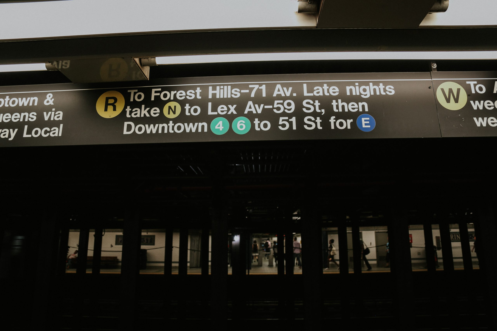
Follow the colored circles and direction signs

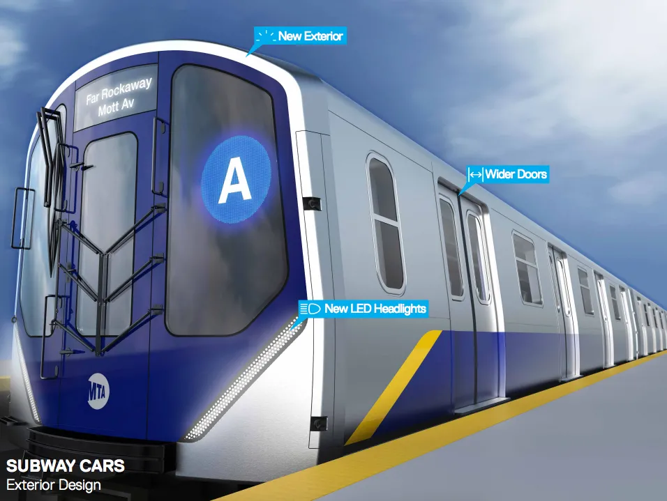
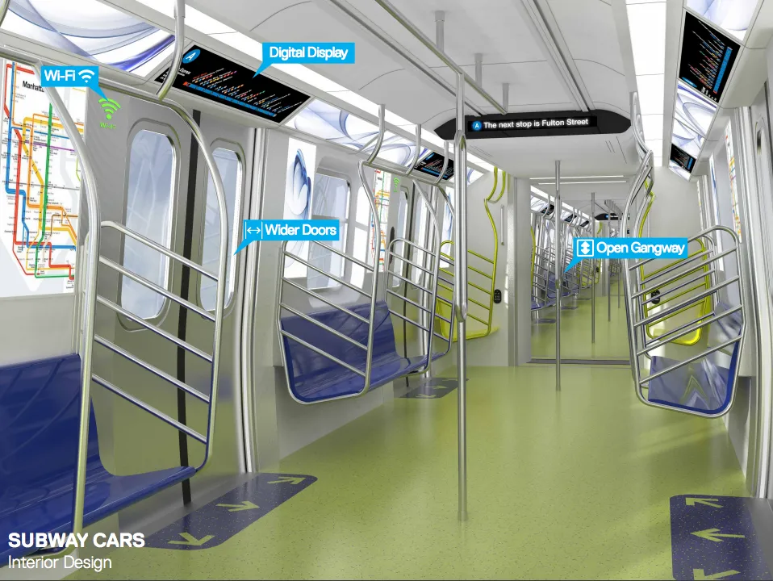
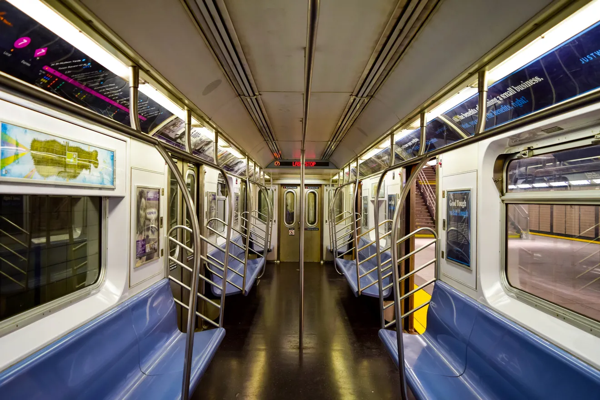
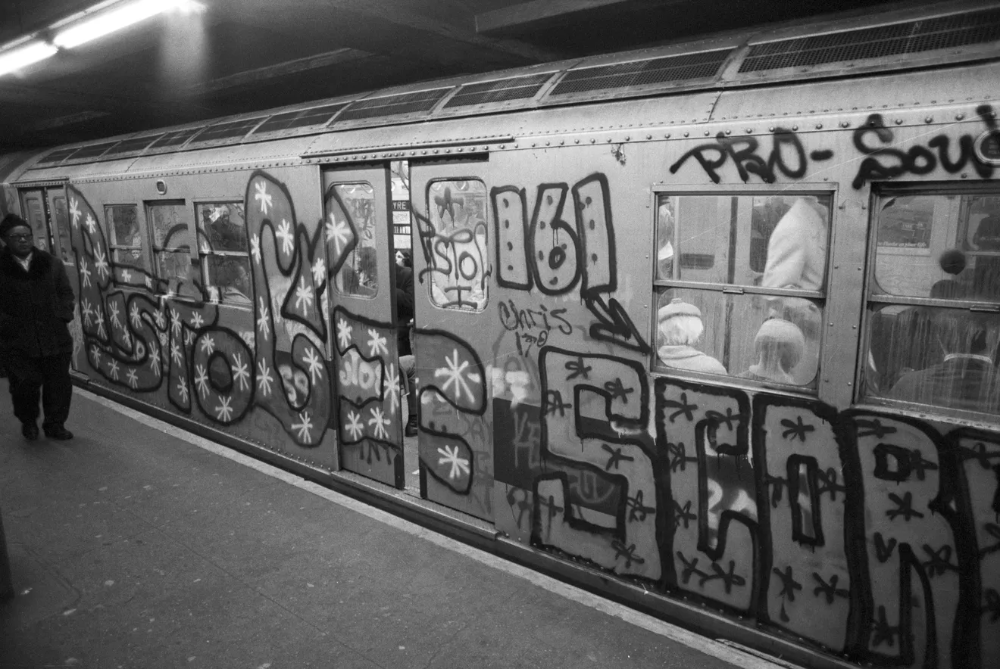
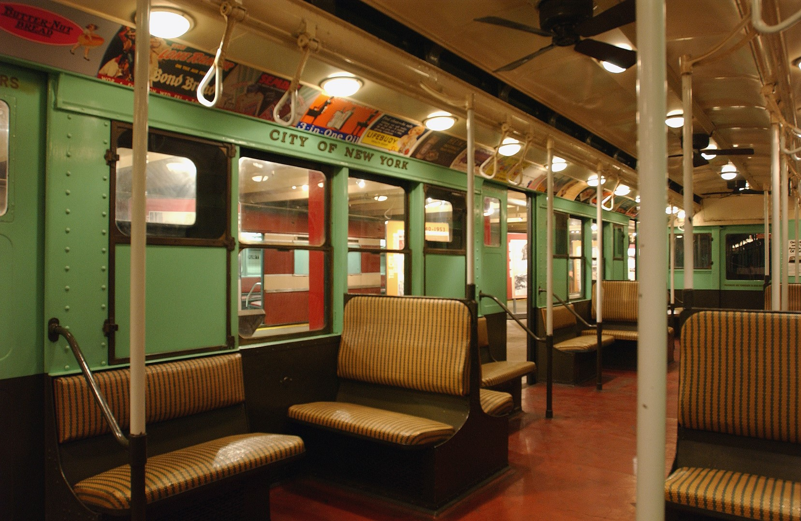
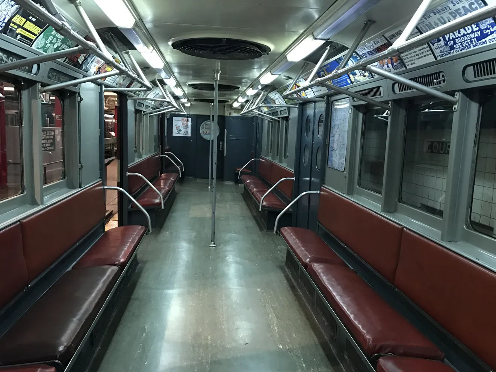
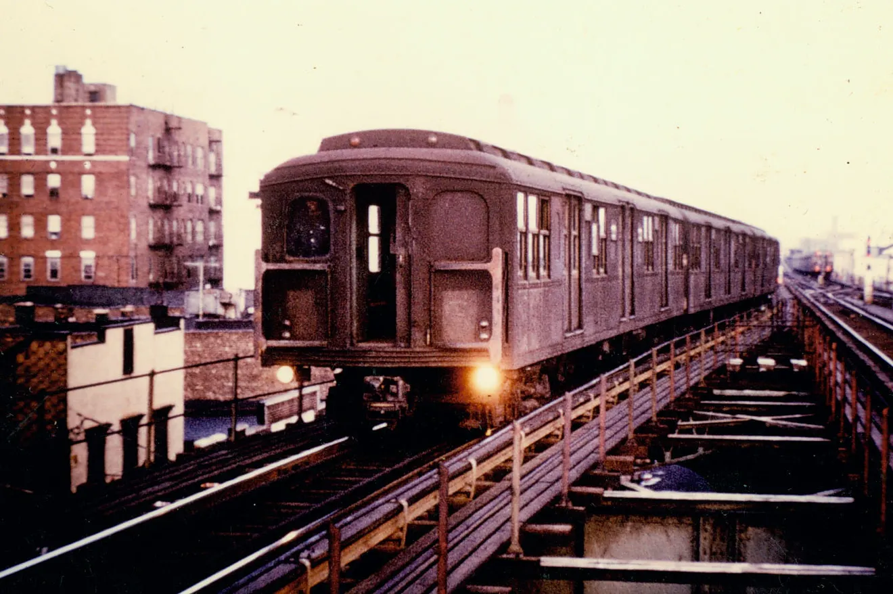
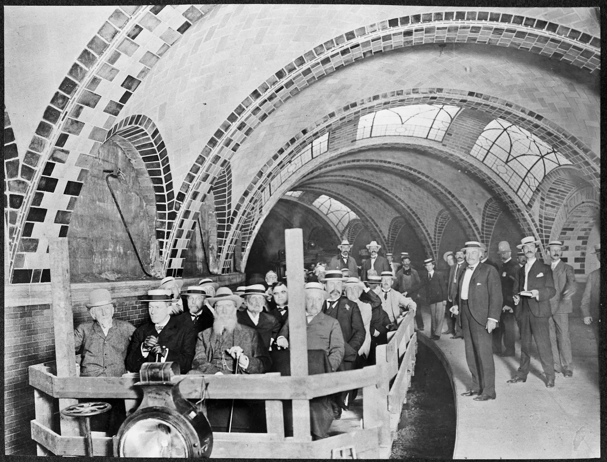
NYC subway evolution through the decades
The subway moves 5.5 million people daily. Trains can be crowded during rush hours (7-9 AM, 5-7 PM) but usually arrive every 2-10 minutes. Modern cars have digital displays showing upcoming stops, while older cars have posted maps above the doors.
Nearly every NYC attraction is near a subway stop. These key stations connect you to multiple lines and popular areas.
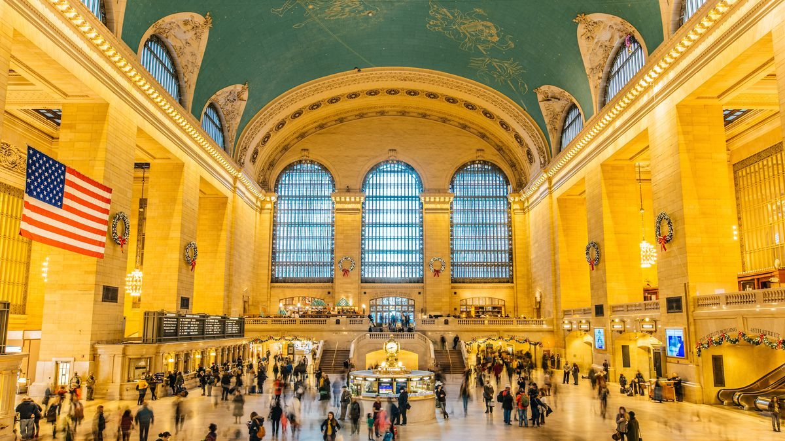
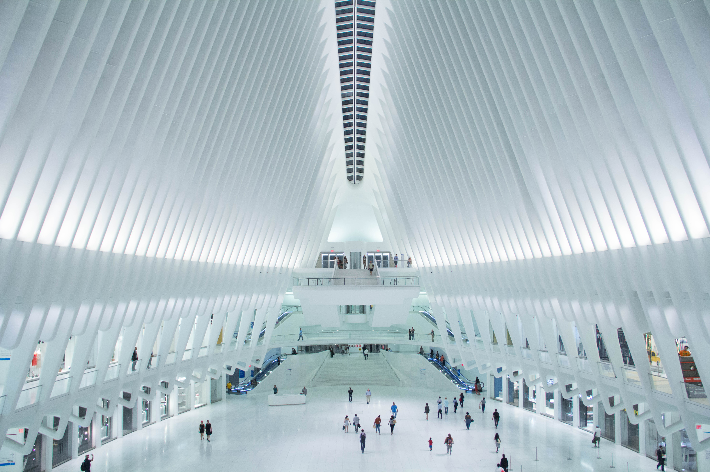
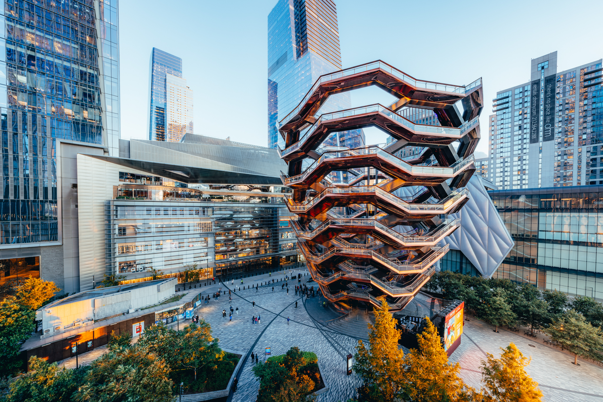
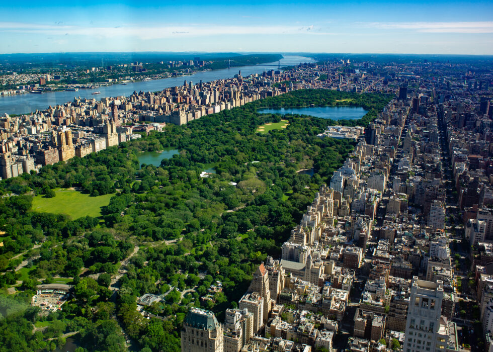
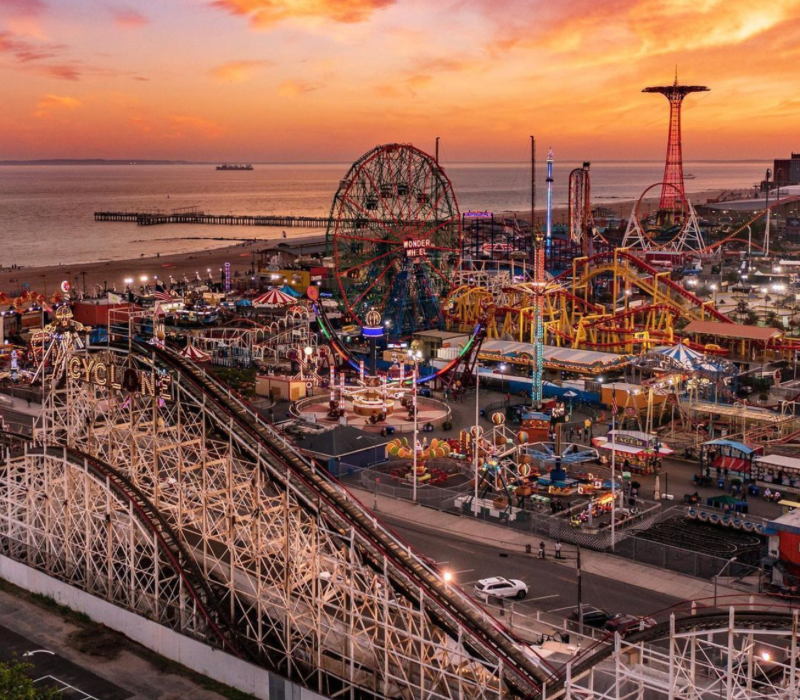
From Grand Central to Coney Island